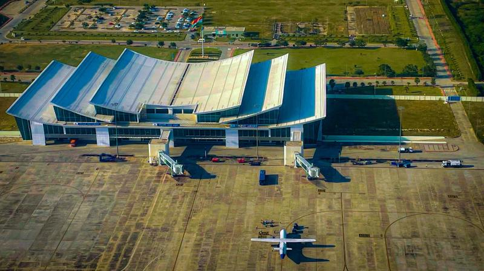

TIRUPATHI
RENIGUNTA AIRPORT(NEAR TIRUPATHI)

- Tirupati International Airport is an international airport serving Tirupati, Andhra Pradesh. It is situated in Renigunta, a suburb of Tirupati. It is 2.8 km (1.7 mi) away from National Highway 71 (previously NH-205), 16 km (9.9 mi) from Tirupati and 39 km (24 mi) from Venkateswara Temple, Tirumala.
- The airport was commissioned in 1971.
- n 1993, the then Prime Minister of India, P. V. Narasimha Rao, laid the foundation stone for a new terminal building, runway expansion and an Air Traffic Control (ATC) tower at a cost of ₹110 million (US$1.4 million).
- The upgraded airport was opened for passenger traffic in 1999 by the then Prime Minister of India, Atal Bihari Vajpayee.
- The airport was declared an international airport by the Government of India in June 2017. In order to meet the demands of the anticipated international traffic and international chartered flights, AAI took up expansion of the airport to make it suitable for Code-E type of aircraft.
- The then Vice President of India, Venkaiah Naidu, laid the foundation stone for the project on 20 February 2019.
- Upgrading the airport to Code E would also enable the airport to serve as a diversion airport for the two neighbouring metropolitan international airports of Bengaluru and Chennai, in case of emergencies. The existing runway is being expanded to 3,810 m (12,500 ft). A new apron to accommodate wide-bodied aircraft is built and operational.